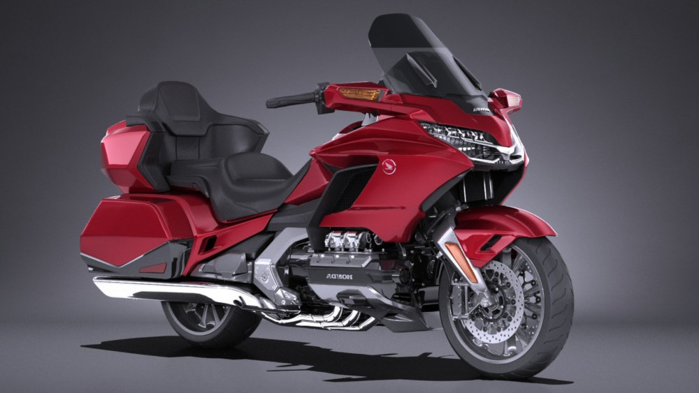
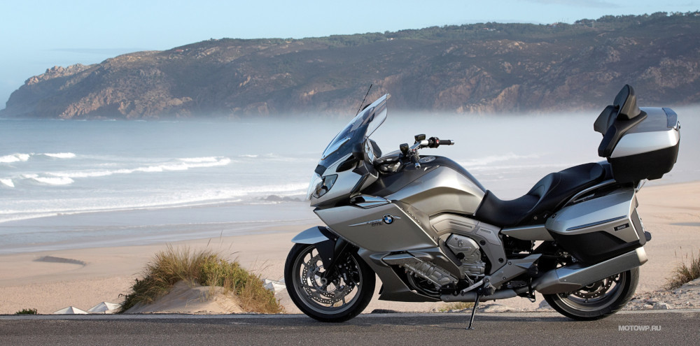

Инструкция для мототуристов
Путешествия на мотоцикле доставят вам восторг и откроют немыслимые горизонты. Такой вид странствий мало того, что позволяет вам прокатиться по всем просторам государства, но и при этом ощущать себя менее обремененным на городских дорогах, чем водители машин. Хотя, даже у такого, на первый взгляд, простого вида путешествий, имеются свои мелкие неурядицы. Для каждого желающего приобщиться к подобному увлечению, всегда первостепенно встает вопрос о выборе подходящего аппарата. Также стоит ставить акцент на выборе подходящего шлема, который является обязательным атрибутом любого мототуриста.
Необходимые детали для подбора правильного байка для путешествий:
- Вместимость бака для бензина. Раз путешествия на мотоцикле подразумевают под собой поездки на дальнее расстояние, а изредка и на просто долгую поездку по местам, далеким от цивилизации, стоит поставить акцент на вместимости бака для топлива. Размер имеет значение, и бак в двадцать литров не выдержит подобных испытаний. Когда можно будет преодолеть до трехсот - четырехсот км. с наполненным баком, тогда аппарат считается пригодным для путешествий.
- Наличие вместительных кофров и приспособленность аппарата к ним. Мототуризм порой может продолжаться неделями, месяцами, в связи с этим необходимо собирать с собой в дорогу множество различных вещей. Перемещать их можно в специализированных огромных кофрах, которые вешаются на хвостовую часть мотоаппарата. Большая вместительность кофров позволит туристу собрать все необходимое для долгого пути.
- Весовая категория агрегата, топливные затраты и уровень мягкости подвески. Маршрут, обычно составляющийся для дальних путешествий, включает в себя прохождение значительного количества миль. В связи с этим, немаловажную роль играет тяжесть или легкость аппарата, которые влияют на непосредственные топливные затраты. В идеале, вес должен быть не больше двухсот тридцати - двухсот пятидесяти килограмм. Еще при формировании путешествия нужно учитывать тот фактор, что на пути дорожное покрытие может оказаться разным. Для большего удобства путешественника на мотоцикле, важно наличие у агрегата подвески высокого качества, которая будет вбирать в себя весь дискомфорт от неровных дорог.
Вот, теперь агрегат находится в полной боевой готовности. Осталось лишь собрать все нужные вещи и упаковать их в кофры. Список того, что нужно иметь с собой в путешествии, обусловливается продолжительностью и дальностью. Ниже приведены самые нужные вещи, которые путешественник обязан иметь в арсенале.
- Комбез, с защитой от дождя.
- Мотоциклетный шлем (с запаской стекла).
- Палатка и другие атрибуты.
- Средства для разжигания огня.
- Нужный резерв провизии и столовые принадлежности.
- Утепленная одежда, термобелье.
- Обычная аптечка.
- Желателен, навигатор, который облегчит вам жизнь.
- Комплект инструментов для внезапного ремонта.
- При необходимости, запаска очков или контактных линз.
Путешествие на мотоциклах — занятие рискованное, и предназначено не для всех. Для него стоит быть уверенным в себе и опытным водителем. Крайне большую важность имеет ваше самочувствие, ведь если вы чувствуете себя усталым или больным, то это может привести к весьма фатальным последствиям на проезжей части. В случае, если вы чувствуете сильную утомляемость, не мучайте себя, а остановитесь в близлежащем отеле у дороги или найдите пристанище для палаточного лагеря, и насладитесь сном.
Также, хотелось быть отметить вероятные сложности в путешествии и дать некоторые варианты их разрешения.
Самой большой проблемой в дороге может стать внезапная неисправность аппарата. В том случае, если повреждение небольшое и его можно поправить собственноручно — это не страшно. Страшнее, когда неисправность требует срочной перевозки в мотосервис, а возможности его туда доставить нет. Иногда в сервисе могут помочь с эвакуатором, но для этого необходимо запастись экстренными номерами телефоном для подобных ситуаций. Случается такое, что бензин все таки заканчивается, а близлежащая заправочная станция находится не близко. В таком случае, можно рассчитывать на добрых и отзывчивых водителей машин или байков, или же на проживающих в ближайшем населенном пункте. Тут вам очень будет кстати иметь при себе специальный шланг для отсоса, чтобы суметь занять каплю топлива.
Как уже можно было заметить, у путешествий на мотоцикле есть куча своих особенностей и сложностей. Об этом можно писать бесконечно, и то, всего не опишешь. Большое значение имеет ваше настроение и надежда на лучшее. Но все же, если вдруг вас постигла неудача, надо сохранять позитивное настроение и сохранять спокойствие. Подобные ситуации часто позволяют нам заполучить новые знакомства и подкрепить нашу веру в человечество.